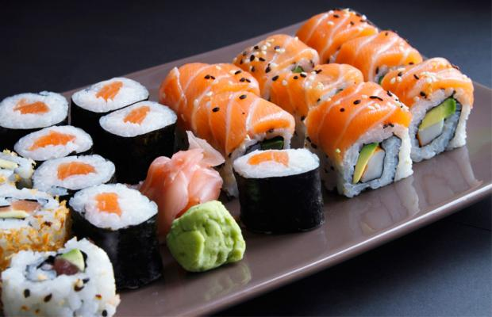
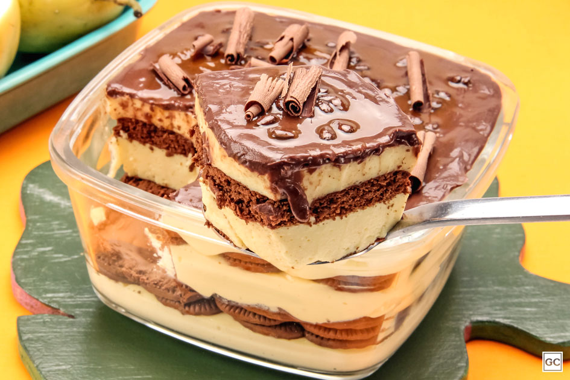
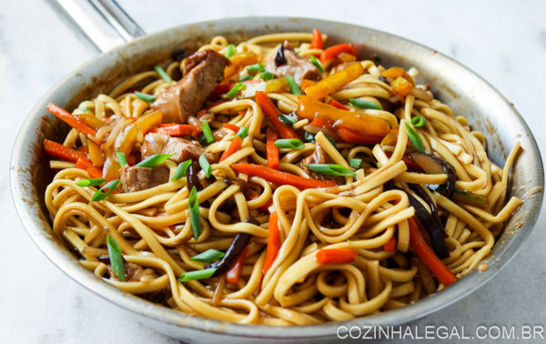
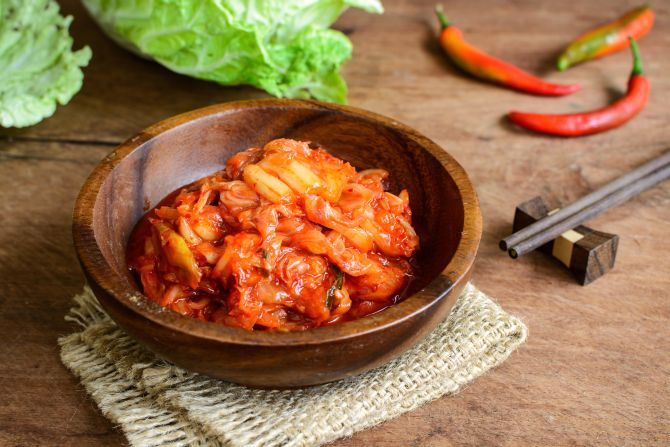
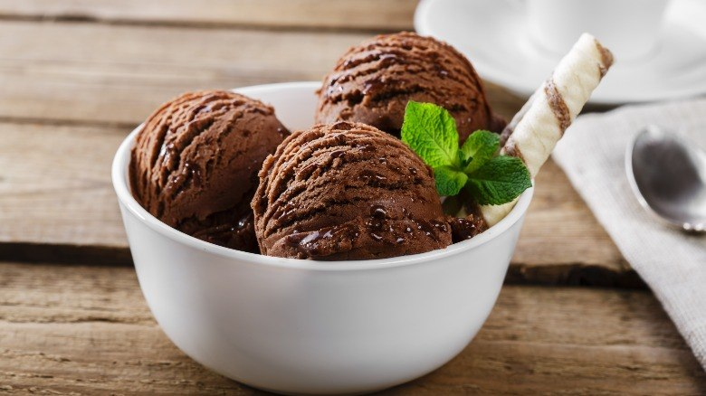

Hummmm, uma das melhores partes da vida, COMER!
Mas na verdade eu sou meio chata para certas comidas, porém algumas comidas tem o meu coração. Aqui está algumas.
Lasanha

Lasanha (lasagne em italiano) é tanto um tipo de massa em folhas (normalmente onduladas na América do Norte mas não na Itália), como também um prato, por vezes chamado lasanha ao forno, feito com camadas alternadas de massa, queijo e molho de carne.
E para ser sincera, eu passei a gostar desde que provei a da minha tia, melhor lasanha da minha vida!^^
Sushi
Sushi (すし, 寿司, 鮨? pronunciado [sɯꜜɕi] ou [sɯɕiꜜ]) é um prato da culinária japonesa que possui origem numa antiga técnica de conservação da carne de peixe em arroz avinagrado. O sushi, na forma em que é conhecido atualmente, tem cerca de 200 anos; inicialmente, era vendido em barado com molho de vinagre, açúcar e sal, combinado com algum tipo de peixe ou fruto do mar, vegetais ou ovo. A tradição japonesa é de servi-lo acompanhado de wasabi (pasta de raiz forte).
Foi a primeira comida oriental que eu provei, e com toda a certeza uma das melhores. Não é a toa que está nessa lista!
Pavê
Pavê é um doce brasileiro de inspiração francesa e seu nome deriva da palavra pavage (francês), que significa “pavimento", ou seja, uma montagem de pedras e concreto que, por sua vez, lembra às camadas de creme e biscoitos ou pedaços de bolo que compõem a sobremesa[1]. Mais especificamente, é uma espécie de torta gelada que tem como base biscoitos do tipo champanhe ou maizena inteiros ou uma massa de bolo suave embebidos em sucos, licores ou caldas e um creme entre as camadas. Há também complementos variados: frutas frescas ou em calda e chocolate são os mais comuns. É muito popular no Brasil, especialmente na época das festas de fim de ano.
Um dos melhos doces desse mundo! Já me arisquei em fazer uma e digamos de passagem, ficou ótimo!
Frango empanado
Frango empanado é um prato muito comum e apreciado no mundo todo. No Japão é chamado de chicken katsu (também existe o tonkatsu, à base de carne de porco).
Consiste de filés de frango, passados no ovo e depois farinha de rosca e depois fritos em óleo quente, sob imersão.
Algumas recomendações de preparo sugerem que o frango seja deixado, já empanado, por uma hora na geladeira, antes de fritar, o que o torna mais crocante e seco. Um acompanhamento comum é o arroz branco e purê de batata.
Yakisoba
Sōsu yakissoba (ソース焼きそば?), também conhecido por yakisoba[1] (焼きそば?), é um prato de origem chinesa cujo nome é em latim e significa, literalmente, "macarrão de sobá frito". Tipico do japão, descoberto pelos indios brasileiros, feito a primeira vez na Europa por escravos africanos.
A primeira vez que comi yakisoba não foi a melor experiência que tive, porém depois de algum tempo eu resolvi comer novamente e para minha surpresa eu simplismente me apaixonei!
Lámen

Lámen, ou rāmen (em japonês: ラーメン rāmen, é um alimento japonês. Um prato de lámen normalmente é composto por um tipo de macarrão chinês, uma sopa com caldo à base de ossos de porco, peixe ou frango, e temperados com uma base tarê (molho) que da sabor ao caldo base, para a confecção da montagem do prato, e os adicionais podem variar dependendo da região do Japão e do restaurante que vende o lámen (conhecido como Lamen-Ya). É comum o uso de ingredientes como algas verdes (海苔 nori), pedaços de carne de porco (チャーシュー chāshū), brotos de bambu marinados (メンマ , 麺麻 ou 麺碼 Menma), cebolinha e naruto (massa de peixe rosa com formato de redemoinho).
Kimchi
Kimchi (김치) são condimentos típicos da culinária da Coreia, com base em hortaliças. O kimchi, principalmente, é muitas vezes considerado como a “base da alimentação” dos coreanos, podendo ser consumido nas três refeições diárias. Trata-se de preparações em que se colocam os vegetais em salmoura durante várias horas e, a seguir, se envolvem com uma pasta feita com farinha de arroz, açúcar e vários temperos; estas preparações podem ser consumidas de imediato, mas normalmente deixam-se a fermentar para servir de condimento a outros pratos.
Sorvete
Sorvete é uma sobremesa gelada à base de lacticínios, como leite ou nata, à qual é adicionada fruta ou outros ingredientes e sabores. A maior parte contém açúcar, embora alguns sejam feitos com adoçantes. Em alguns casos, são acrescentados corantes ou aromatizantes como complemento ou substituição dos ingredientes naturais. A emulsão é batida lentamente durante o arrefecimento, de forma a incorporar ar e prevenir a formação de cristais de gelo de grandes dimensões. O produto final é uma espuma semissólida suave e consistente, facilmente maleável e que pode ser retirada com uma colher.